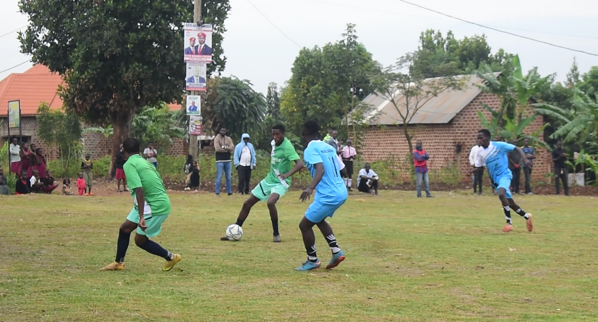
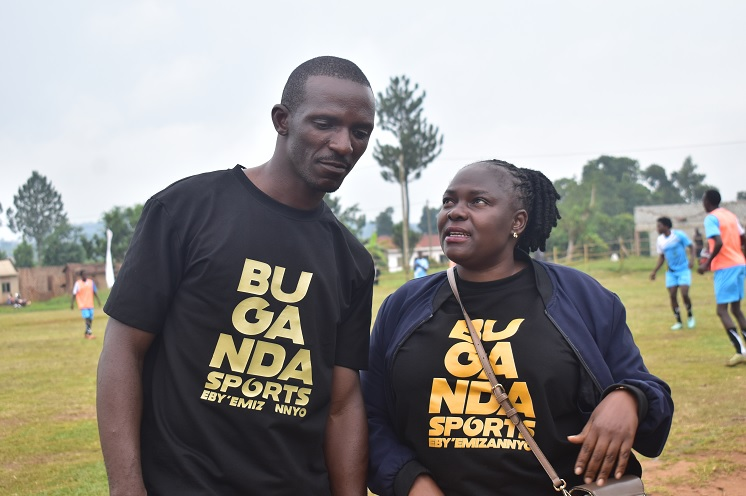
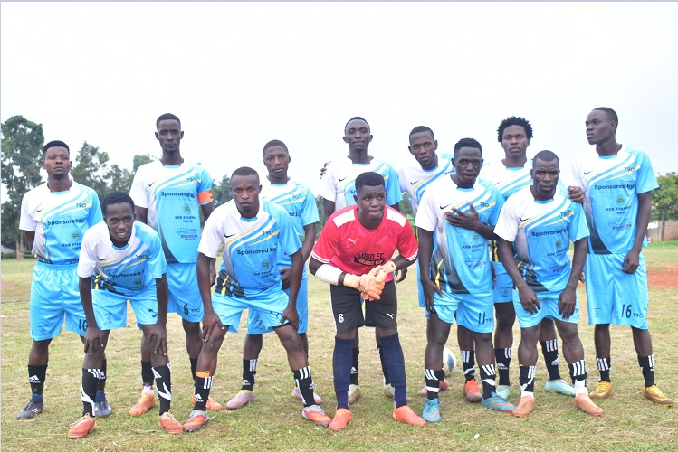

BUSUKUMA — Kaggo Ssalongo Ahmed Magandazi has expressed immense pride and optimism for the future of the Kyadondo Ssaza team following the successful kickoff of the Kaggo Cup 2026.
The tournament, which officially commenced last Saturday, February 21st, saw a massive turnout at Lugo in Busukuma Sub-county. As the host sub-county, Busukuma faced off against Nangabo Sub-county in a match that kept fans on the edge of their seats.

Local talent on display during the intense match between Busukuma and Nangabo.
Grooming Future Champions
Ssalongo Magandazi Matovu, the Kaggo of Kyadondo County (Ssaza), was physically present to witness the encounter. He noted that the primary goal of the Kaggo Cup is not just competition, but to foster unity among sub-counties and act as a scouting ground for the county team.
"The style of play and the level of skill I have seen today is truly exciting. It gives me great hope that the Kyadondo team will secure elite players to represent us in the upcoming Masaza Cup 2026," Magandazi remarked.


Football enthusiasts in Kasangati Town Council have lauded the Kaggo for maintaining the tournament, which remains a cornerstone for grassroots sports development in the region. The tournament continues next weekend with fixtures scheduled across various wards.